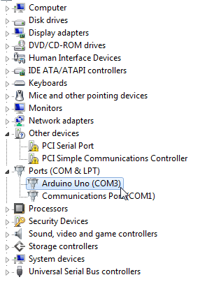

Open Device Manager, and expand the Ports
(COM & LPT) list.
Note the number on the USB Serial Port.

Open terminal and type: ls /dev/*.
Note the port number listed for /dev/tty.usbmodem* or /dev/tty.usbserial*.
The port number is represented with * here.
Open terminal and type: ls /dev/tty*.
Note the port number listed for /dev/ttyUSB* or /dev/ttyACM*.
The port number is represented with * here.
Use the listed port as the serial port in MATLAB®.
For example: /dev/ttyUSB0.